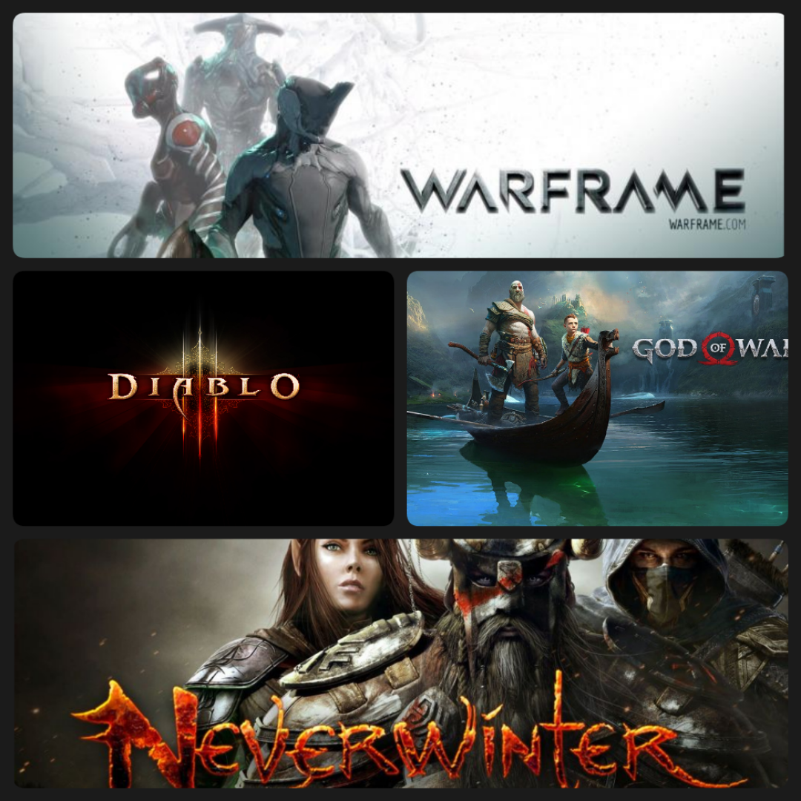
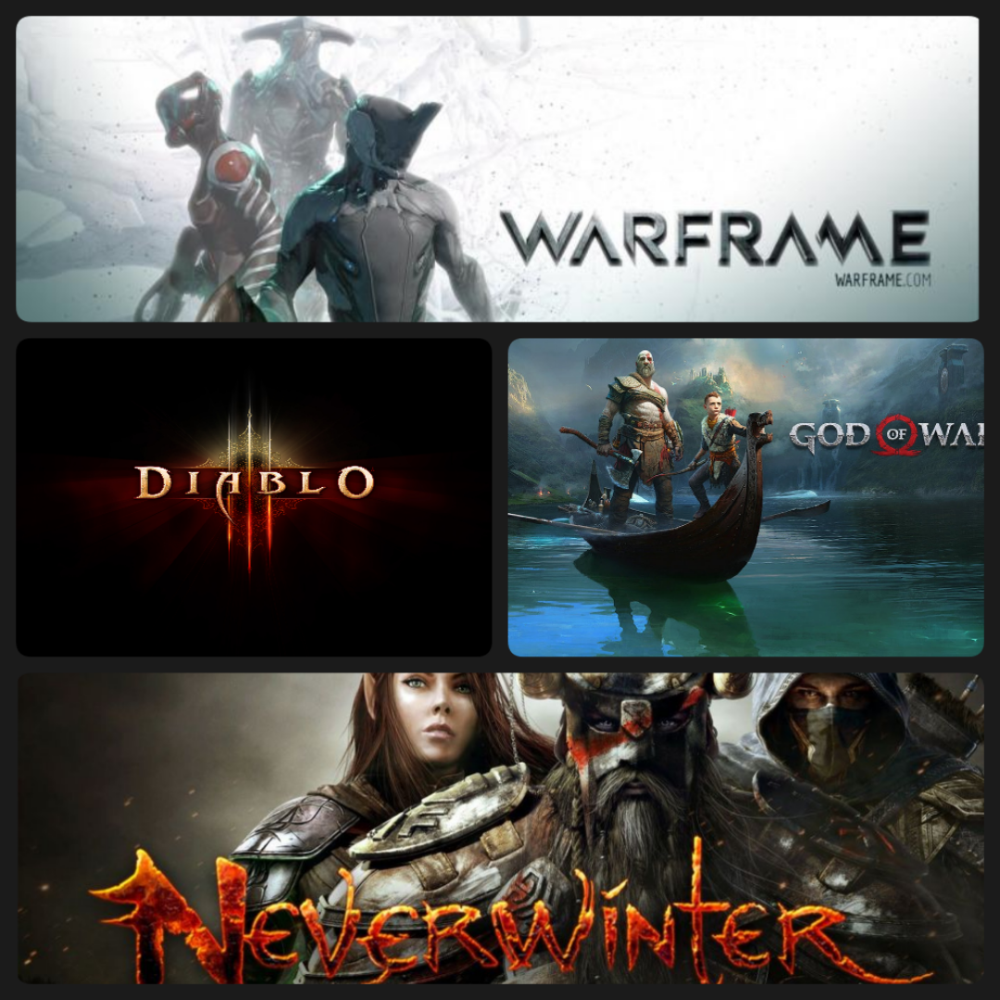

Qui je suis:
Suite à une reconversion professionnelle, j'ai souhaité me diriger vers un domaine porteur du numérique. Actuellement en formation au le Titre Professionnel : Développeur Web et Web mobile; je recherche un stage pour 13 semaines au sein d'une entreprise web. Le stage débuterait le 17 octobre 2022 et finirait le 20 janvier 2023.
Cette expérience en milieu professionnelle me permettrait d’acquérir plus d’autonomie ; je pourrais ainsi renforcer ce que j’ai appris lors de ma formation professionnelle, et étoffer mon panel de compétences.
Je suis une personne persévérante et motivée afin de franchir toutes les difficultés que je rencontre. Autonome de nature, je peux travailler seule ou en groupe, étant également capable de m’adapter à un environnement que je ne connais pas. Je cherche toujours à améliorer et optimiser les projets personnels et les petits projets de formation en m’aidant d’internet.

 
